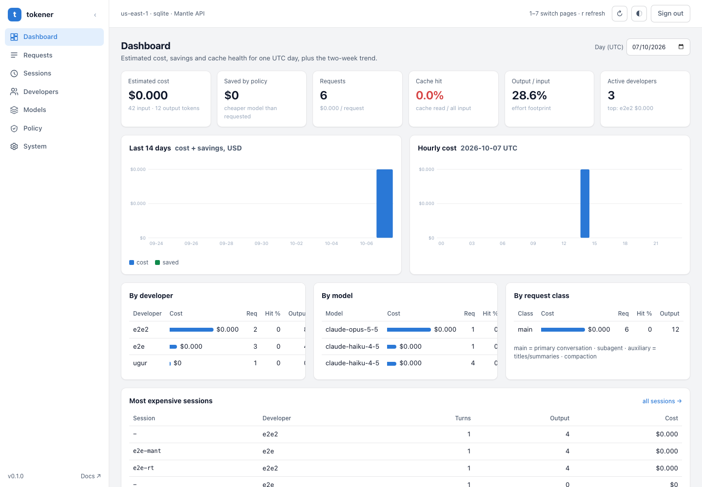

Open source · MIT · v0.1.0
Claude Code on Amazon Bedrock, without the token bill shock.
tokener is a drop-in API gateway that measures and cuts the token cost of Claude Code. Developers install nothing. They get a URL and a personal token, and the gateway does the rest.
Why tokener
In its agent loop, Claude Code resends the whole conversation on every turn. A 10-person team can easily spend $2,000–3,000 a month on tokens, and nobody can see who spent it on what.
Visibility
Every request is logged by developer, session, model and request class. See cost, cache hit rate and the most expensive sessions.
Policy
Deterministic rewrites route subagent and background traffic to cheaper models, fill in a default effort and trim oversized tool output.
Control
Daily USD budgets and token limits per developer. Warn at 80%, then warn, downgrade to a cheaper model, or block.
See where every token goes
A built-in admin console with estimated cost, policy savings, cache hit rate and a 14-day trend, broken down by developer, model and request class.

Two lines in settings.json. That's the whole rollout.
Run it locally against your own AWS credentials today, then deploy to your AWS account with one CDK command.